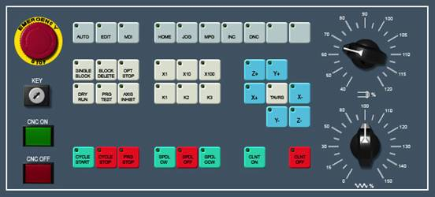

| 南京迈顺机床FANUC 0i-MB面板 |
| 返回<<< |

自动加工模式用于直接通过操作面板输入数控程序和编辑程序。
手动数据输入手动模式，手动连续移动台面和刀具。
增量进给。
用232电缆线连接PC机和数控机床 ，选择程序传输加工。
单段运行
选择停止
回零
空运行
循环启动
循环停止
程序停止
主轴正转
主轴停止
主轴反转
选择移动机床轴时，每一步的距离：×1为0.001毫米，×10为0.01毫米，×100为0.1毫米，×1000为1毫米。置光标于按钮上，点击鼠标左键选择。

调节程序运行中的进给速度，调节范围从0～120% 。置光标于旋钮上，点击鼠标左键转动。
主轴转速度调节旋钮， 调节主轴转速，调节范围从40～120%。